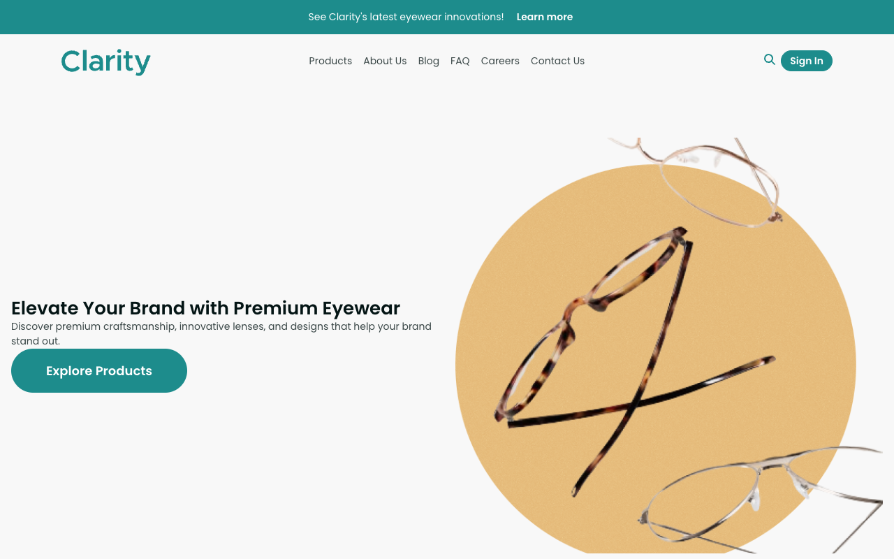
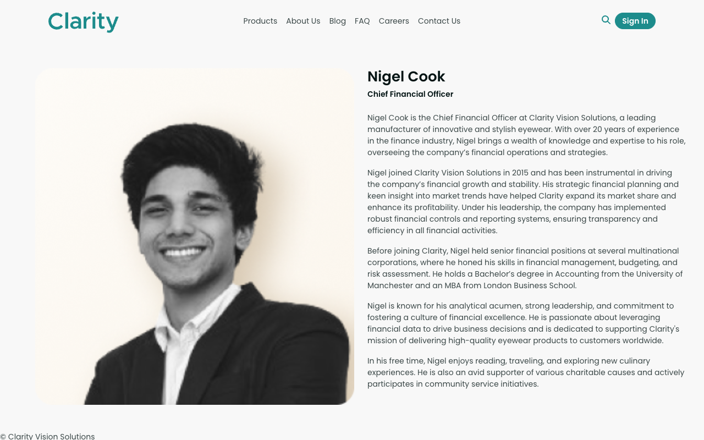

Workbook › Day 2
Level 7 — Displaying content: mapping, display pages and collections
What you'll build: Clarity's pages show CMS content instead of copies of it. Home, FAQ and the announcement bar read from the Marketing Space, and every article and leadership profile gets its own page.
Key terms
- Mapping: a link from a fragment's editable image, text or link to a field of a content item, so the page updates when the content changes.
- Display page template: one template that gives every item of a structure its own page at its own URL.
- Manual collection: a list that holds exactly the items you pick, in your order.
- Dynamic collection: a list that holds whatever matches its rules (a structure, a category…).
- Collection Display: a fragment that renders a collection on a page, one fragment per item.
7.1 — Map the Home page images to Marketing files
🎯 Goal: the Home page's images and the master pages' logos come from Space files, not from copies on the pages.
💬 Prompt:
Using manage-pages and manage-cms, map the Home page's images in
client-extensions/clarity-site to files in the Marketing Space instead of
literal images:
- Banner image: home-banner-narrow-no-background
- Clarity Solutions Promo image: sunglasses-on-shelves
- Clarity Solutions Promo "Content Wrapper" background image:
gradient-overlay
- Distributor Promo background image: home-promotion
Also make the Banner Content, Clarity Solutions Promo, See the Difference
and Helpful Articles containers fixed width.
In both master pages, map the "Header Branding" Image to the Branding
Space's logo-name-vector file and the "Footer Branding" Image (primary
master only) to logo-full-name-vector, each linking to the Home page and
no wider than 200px. Find each file in the Space by
its title, map by a reference that survives a rebuild (an ERC, not a
numeric id) if the format allows it, and tell me which form you used.
Deploy, then fetch Home as Guest and list the image URLs it renders.
✅ Verify (look, don't change anything):
- Open Home in a private window: the banner shows the eyewear image, and the promotion shows the shelves photo over the gradient.
- In the same window, the header and footer show Clarity's logo. Click it: you're on Home.
- As the admin, open Home in edit mode and select the banner's Image fragment → its image-square element: Source Selection is Mapping, pointing at the Marketing file. Leave without publishing.

7.2 — Display page templates for articles and leadership profiles
🎯 Goal: every Article and every Leadership Profile has its own page, rendered from one template each.
💬 Prompt:
Using manage-pages, add two display page templates to
client-extensions/clarity-site, both marked default for their structure:
- "Article", for the Article CMS structure, on the Primary Master Page:
title, headline, image and content, mapped to the entry's fields.
- "Leadership Profile", for the Leadership Profile structure, on the
Secondary Master Page, laid out like
context-source/design-reference/compositions/display-composition-leadership-profile.zip:
portrait on the left; name, job title and bio on the right.
Deploy, then fetch one article's and one profile's display page URL as
Guest and confirm they render their own fields. Give me both URLs.
✅ Verify (look, don't change anything):
- Open the two URLs the agent gave you in a private window: each shows its own content.
- Site Menu → Design → Page Templates → Display Page Templates: Article and Leadership Profile are marked Default.

⚠️ If it doesn't match: if a display page answers 404 for Guest, the Space's content may not be viewable by Guest, or the Space isn't connected to the site. Ask the agent to check both.
📖 Why it matters: the agent mapped images and attachments by the file's numeric id. Those ids differ on every Liferay instance, so this part of the tree is tied to yours. Real projects handle it with a script that looks the ids up by name and rewrites them before each deploy to another environment (see Extras).
7.3 — Helpful Articles: a collection on Home
🎯 Goal: a Helpful Articles collection of Clarity's articles, displayed on Home as Clarity Cards that link to each article's display page.
💬 Prompt:
In client-extensions/clarity-site, create a dynamic collection "Helpful
Articles" of the Article entries in the Marketing Space, newest first, at
most 3 items. On Home, put a Collection Display of it in the "Helpful
Articles" container, one column on mobile, without pagination, rendering
each item with the Clarity Card fragment: card-image → image, category →
the entry's Articles category, card-title → title, summary → headline,
card-link → the entry's display page. Deploy and check as Guest that the
three cards render with their links.
✅ Verify (look, don't change anything):
- Home shows three article cards. Click one: its display page opens.
- Site Menu → Site Builder → Collections → open Helpful Articles: a dynamic collection, item type Article, scope the Marketing Space.

7.4 — The FAQ page from dynamic collections
🎯 Goal: four dynamic collections (one per FAQ category) rendered on the FAQ page, plus the Helpful Articles under them.
💬 Prompt:
In client-extensions/clarity-site, create four dynamic collections named
"FAQ - <category>", one per FAQ category, each holding the FAQ entries of
the Marketing Space that have that category. On the FAQ page:
- set the left Image fragment to the Marketing file
glasses-vertical-banner-with-text-lg;
- in each "FAQ Section", under its heading, a Collection Display of the
matching collection, showing all items without pagination, each item
rendered with the FAQ Question and Answer Pair fragment (main-text →
title, answer-text → answer);
- in "Promoted Articles", the Helpful Articles collection as Clarity Cards,
as on Home;
- "FAQ Content" and "Promoted Articles" fixed width.
Deploy and check as Guest that every question appears under its category.
✅ Verify (look, don't change anything):
- Open FAQ in a private window: four sections, each with its questions.
- Under Returns and Exchanges, expand What is your return policy?: the answer shows.
- Site Menu → Site Builder → Collections: four FAQ - … dynamic collections are listed.
- Open FAQ - Retail Partners: its filter is the Retail Partners category.

7.5 — The announcement bar
🎯 Goal: the Primary Master Page's announcement bar shows the latest announcement, on Clarity's brand color, on every page.
💬 Prompt:
In client-extensions/clarity-site, create a dynamic collection
"Announcements" of the Announcement entries in the Marketing Space. In the
Primary Master Page's "Header Announcement Bar": a Collection Display of
it showing one item, without pagination, with an "Announcement" container
per item (flex row, centered, vertical padding spacer 2) holding a
Paragraph mapped to message and a Clarity Button (borderless, primary,
small, inverted) whose text maps to linkText and whose link maps to
linkURL. Give the bar the "Color Brand Primary" background and the
paragraph the "Color Neutral 0" text color from Clarity Theme CSS. Deploy
and check every page using the primary master shows it.
✅ Verify (look, don't change anything):
- Open any page except Sign In: a teal bar above the header shows See Clarity's latest eyewear innovations! and a Learn more link to Products.
⚠️ If it doesn't match: if the bar is empty after a deploy, redeploy once: the initializer sometimes imports the master page before the collection it points to exists.
⭐ Extras
Optional, for when you finish early. The next level doesn't depend on them.
⭐ 7.6 — Bonus: a manual collection, by hand
🎯 Goal: a manual collection Editor's Picks with two Article entries, shown on the Blog page as Clarity Cards. You build the collection by hand, then write your own prompt for the Blog page.
📋 Before the prompt:
- Site Menu → Site Builder → Collections: create a manual collection Editor's Picks with two Article entries.
💬 Prompt: write your own: ask your agent to show Editor's Picks on the Blog page as Clarity Cards.
✅ Success looks like:
- The Blog page shows your two picks, in your order.
📖 Why it matters: a manual collection holds exactly the items you pick, in your order. The site initializer can't build one for CMS content on this release and no API writes collections, so this one is yours to make.
⭐ Bonus: look up file ids by name (after 7.2)
🎯 Goal: a script that looks up the ids of the files your display pages map, by name, and rewrites them before each deploy to another environment. You write the prompt yourself.
✅ Success looks like:
- Your agent shows you the script and the ids it looked up by name.
📖 Why it matters: the agent mapped images and attachments by the file's numeric id, and those ids differ on every Liferay instance. A lookup by name keeps the tree portable.